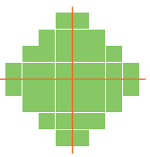
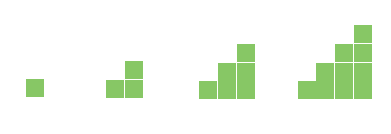

کار در کلاس
1- تعداد مثلث های کوچک را در شکل بشمارید.
برای شمارش از تقارن استفاده کنید.سپس شماره تصویری که پروانه را به صورت متقارن رنگ کرده است را انتخاب کنید .
|
|
|
|
|
| (1) | (2) | (3) | |
| تعدا مثلث ها |
2- به الگوی شکل ها توجه کنید و سپس الگوی عددی را کامل کنید.
آن گاه تعداد مربع های سمت راست را به کمک تقارن به دست آورید
|  |  |
1
 3
3
2
3
رسم کنید
مانند شکل یک مکعب را پشت طلق یا شیشه بگذارید.
در طرف دیگر آن بنشینیدو با ماژیک روی لبه های مکعب
خط بکشید
مکعب را برداریدو شیشه را نگاه کنید.شکل روی شیشه
تصویر یک مکعب را روی یک سطح نشان میدهد.
کدام گزینه سطح مکعب روی شیشه را به درستی بیان میکند؟
در طرف دیگر آن بنشینیدو با ماژیک روی لبه های مکعب
خط بکشید
مکعب را برداریدو شیشه را نگاه کنید.شکل روی شیشه
تصویر یک مکعب را روی یک سطح نشان میدهد.
کدام گزینه سطح مکعب روی شیشه را به درستی بیان میکند؟